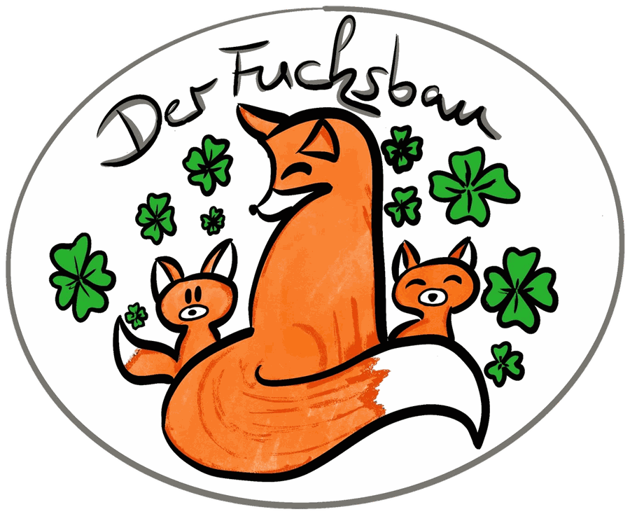

Kindertagespflege in Mücke Ein Bau für kleine Füchse.
Eine kleine, familiäre Gruppe, bedürfnisorientiert und mit viel Herz begleitet.
- Kinder von 0 bis 3 Jahren
- Mo–Fr 7:45–14:45 Uhr
- Pflegeerlaubnis nach § 43 SGB VIII

Fragen und Antworten
Die wichtigsten Antworten stehen hier. Alles Weitere beantworten wir persönlich auf WhatsApp.
Was ist der Fuchsbau?
Ich bin Katharina, und der Fuchsbau ist meine Kindertagespflege in Mücke, mit Pflegeerlaubnis und Zulassung des Jugendamts nach § 43 SGB VIII.
Von Montag bis Freitag, 7:45–14:45 Uhr, erleben wir gemeinsam täglich kleine Abenteuer und wundervolle Momente. Ob beim Spielen im Sandkasten, beim Entdecken der Natur oder bei kreativen Bastelprojekten: Bei uns steht das Wohl jedes einzelnen Kindes im Mittelpunkt.
In meiner kleinen, familiären Gruppe (Kinder von 0 bis 3 Jahren) hat jedes Kind die Möglichkeit, sich gehört, gesehen und geborgen zu fühlen. Hier darf gelacht, getobt, entdeckt und gekuschelt werden, in einem liebevollen Umfeld, das Geborgenheit und Vertrauen schenkt.
Ich arbeite bedürfnisorientiert und begleite die Kleinen mit viel Herz durch ihre ersten wichtigen Lebensjahre. Jeder Tag ist bei uns ein neues, kleines Abenteuer! Habt ihr Interesse oder Fragen? Meldet euch gerne.
Wo findet ihr uns?
Im Herrmannsbergweg in Mücke, für Familien aus
Mücke und der Umgebung.
Route planen ↗ (Google Maps, neuer Tab)
Gibt es freie Plätze?
Das ändert sich immer wieder. Fragt einfach kurz per WhatsApp nach, eine Nachricht genügt. Ihr bekommt eine persönliche Antwort.
Neues aus dem Fuchsbau
Noch Fragen?
Eine Nachricht genügt, ihr bekommt eine persönliche Antwort.
Per WhatsApp anfragen (neuer Tab)Ihr kennt den Fuchsbau schon? Mit einer kurzen Bewertung auf Google ↗ (neuer Tab) helft ihr anderen Familien aus der Umgebung, uns zu finden.